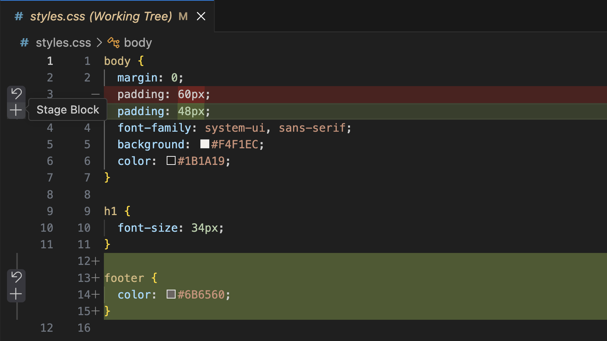

Часть 1 — свой репозиторий. Часть 2 — клон учебного проекта. Часть 3 — четыре правки, записанные тремя коммитами. Сдаётся документ Word со снимками экрана.
Отправку коммитов на GitHub (Sync Changes, git push) мы ещё не изучали — это глава 4.3. Работа выполняется только на вашем компьютере и сдаётся снимками экрана.
После коммитов в клоне появится кнопка Sync Changes и стрелка ↑3 в строке состояния. Не нажимайте: прав на запись в учебный репозиторий у вас нет, будет ошибка.
Главы 2.1 и 2.2 (путь А).
dz-git-familiya, где вместо familiya — ваша фамилия латиницей, например dz-git-ivanov. Папка не должна лежать внутри другого репозитория и в облачной папке (OneDrive, iCloud Drive, Яндекс Диск).obo-mne.md и впишите в него свои данные:
# О себе Иванов Иван, группа ИС-21 Изучаю Git в VS Code.
Панель Source Control: в разделе Changes файл obo-mne.md с буквой U, рядом открыт сам файл с вашими данными.
Подпись: «Рисунок 1 — Новый файл в только что созданном репозитории»
Добавил файл о себе, нажмите ✓ Commit.Любимый напиток: … и сохраните. У файла буква M. Щёлкните по нему в панели — откроется окно сравнения.Окно сравнения obo-mne.md с добавленной строкой и панель Source Control, где у файла буква M.
Подпись: «Рисунок 2 — Изменение файла после первого коммита»
Дописал любимый напиток.git logТерминал с ответом git log: два коммита, ваше имя в строках Author.
Подпись: «Рисунок 3 — История своего репозитория»
Глава 2.2 (путь Б). Учебный проект — сайт кофейни: четыре файла, пять коммитов.
https://github.com/MaximBytecamp/kofeynya.git
Git: Clone → вставить адрес → Enter.dz-git-familiya не выбирайте — получится репозиторий внутри репозитория.git log --oneline d451256 Добавил какао в меню c016d04 Добавил README с описанием проекта 07b88ef Добавил страницу меню c971be5 Подключил файл со стилями 69a4f0b Первая страница кофейни git remote -v origin https://github.com/MaximBytecamp/kofeynya.git (fetch) origin https://github.com/MaximBytecamp/kofeynya.git (push)
Окно VS Code с проектом kofeynya: в проводнике четыре файла, в терминале ответы git log --oneline и git remote -v.
Подпись: «Рисунок 4 — Склонированный проект и его история»
Глава 2.3. Четыре правки относятся к трём задачам — значит, три коммита. Две правки из разных задач находятся в одном файле index.html.
Правка 1, index.html — часы работы:
<p>Часы работы:с 08:00 до 20:00, без выходных.</p>
<p>Часы работы: с 07:30 до 21:00, без выходных.</p>
Правка 2, index.html — ссылка в конце страницы:
<h2>Разделы сайта</h2>
<ul>
<li><a href="menu.html">Меню</a></li>
<li><a href="dostavka.html">Доставка</a></li>
</ul>Правка 3 — новый файл dostavka.html рядом с index.html:
<!doctype html> <html lang="ru"> <head> <meta charset="utf-8"> <title>Доставка · Кофейня «Зерно»</title> <link rel="stylesheet" href="styles.css"> </head> <body> <h1>Доставка</h1> <p>Привозим заказ в любой корпус университета за 15 минут.</p> <p><a href="index.html">На главную</a></p> </body> </html>
Правка 4, menu.html — напиток с вашей фамилией:
<li>Какао — 170 ₽</li>
<li>Раф «Иванов» — 230 ₽</li>
</ul>Сохраните все файлы.
В Changes три файла: dostavka.html (U), index.html и menu.html (M).
git status --short M index.html M menu.html ?? dostavka.html
Панель Source Control с тремя файлами в Changes и терминал с ответом git status --short.
Подпись: «Рисунок 5 — Четыре правки в трёх файлах до отбора в индекс»
| Коммит | Задача | Правки | Что отбирать в индекс |
|---|---|---|---|
| 1 | Страница доставки | 3 и 2 | dostavka.html целиком и в index.html только участок со ссылкой |
| 2 | Новые часы работы | 1 | Оставшийся участок index.html |
| 3 | Новый напиток в меню | 4 | menu.html |
dostavka.html.index.html — в окне сравнения два участка: часы вверху, ссылка внизу.
index.html появится в обоих разделах. Проверка:
git status --short A dostavka.html MM index.html M menu.html git diff --staged
git diff --staged должен показать новый файл и одну строку со ссылкой, без часов работы. Отобрался не тот участок — − у index.html в Staged Changes и повторить пункт 3.
Панель, где index.html есть и в Staged Changes, и в Changes, и терминал с ответом git status --short (буквы A, MM, M).
Подпись: «Рисунок 6 — В индекс отобрана часть файла index.html»
Заголовок: Добавил страницу доставки. Дважды Shift + Enter. Пояснение: Новая страница dostavka.html и ссылка на неё в разделах сайта.
Поле Message с заголовком и пояснением, разделёнными пустой строкой, до нажатия Commit.
Подпись: «Рисунок 7 — Сообщение первого коммита»
✓ Commit, затем:
git log -1 --stat commit 78ee90fced1099856a843e32baddeea4bc36aa48 Author: Иванов Иван <ivanov@example.com> Date: Wed Sep 30 23:21:14 2026 +0300 Добавил страницу доставки Новая страница dostavka.html и ссылка на неё в разделах сайта. dostavka.html | 13 +++++++++++++ index.html | 1 + 2 files changed, 14 insertions(+)
Хеш, имя и дата будут ваши. Файлов два, в index.html одна строка.
Терминал с ответом git log -1 --stat: ваше имя, сообщение из двух частей, два файла.
Подпись: «Рисунок 8 — Первый коммит: страница доставки»
index.html → Изменил часы работы → ✓ Commit.menu.html → Добавил в меню раф «Фамилия» → ✓ Commit.git log --oneline — восемь коммитов, три верхних ваши.Пустая панель Source Control и git log --oneline с восемью коммитами.
Подпись: «Рисунок 9 — История клона после трёх коммитов»
Фамилия_Git_ДЗ_2.1-2.3.docx.| 5 | Все девять снимков. Три коммита по задачам, первый — с пояснением и двумя файлами. |
| 4 | Нет одного-двух снимков или правки разложены не по задачам. |
| 3 | Выполнены части 1 и 2, в части 3 есть хотя бы один коммит. |
Не принимается, если в Author на снимках 3 и 8 не ваше имя.
| Что видно | Что делать |
|---|---|
В палитре нет команды Git: Clone, панель предлагает скачать Git | Установить Git по главе 1.3, перезапустить VS Code. |
| При коммите сообщение Please tell me who you are | git config --global user.name "Иванов Иван"git config --global user.email "почта" |
| VS Code предлагает отобрать все изменения и сразу сделать коммит | Cancel, отобрать файлы плюсом. |
| В Staged Changes попал не тот участок или файл | − у файла в Staged Changes, правки сохранятся. |
Справочник: maximbytecamp.github.io/git_github_makarov, главы 2.1–2.3.